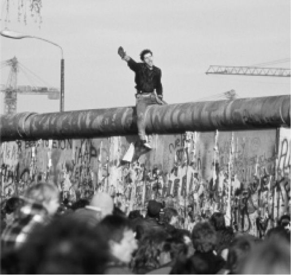

所有关于民主的讨论都没有定论，永无尽头。幸运的是，没有最终的解决方案，无论是形同地狱的还是温和仁慈的，无论是大屠杀还是地球上的新耶路撒冷。正在浮现的是全球资本主义，而不是福山愚蠢主张的“历史的终结”。资本主义与资本家的道德感和责任一样强大，或者说同样脆弱（这是亚当·斯密《国富论》的学说中，出于某种原因被遗忘的部分）。“主权国家”不再像过去那样拥有主权（如果其中的部分国家曾经有的话）或者像过去那样强大，但是他们在经济领域所能实现的政治缓和，对本国居民来说并非微不足道。世界局势在某些方面令人沮丧。

图13 柏林墙，1989年11月8日
对于民主来说，这样的局势并不像伍德罗·威尔逊理想中的那样特别安全。无论是联合国还是美国，都没有意愿或权力在全球范围内强行推广民主，甚至是推广人权。国家之间也没有民主，其他国家可以在国际论坛上自主地投票，现在的美国政府把国内的院外活动集团置于在全球变暖、维和以及以平等条件组建战争犯罪国际法庭方面采取统一行动之前；“反恐战争”到头来也滑稽而武断。
民主机制有望扩展的原因，主要是在一些重要的消极论据中找到的：一党制国家或军事政权往往经济效率低下、腐败且挥霍无度，其治理行为和计划不受公开批评。这样的政权可能会崩溃而真正地破产，大规模通货膨胀使货币一钱不值，最终可能激起国民叛乱，国家机器的支持者则陷入懒散的绝望。1989年11月参与东欧起义的人们表现英勇，其中确实有一种民主的精神。莱比锡、德累斯顿、柏林、布拉格和布拉迪斯拉发等地的工人、教徒和学生并不知道警察和军队不会朝自己开火（有时是违抗开火命令）。我们从中看到的是“人民的力量”和人类的勇气，即便他们只是加速而不是造成这些政权的崩溃。苏联共产党试图通过公开化（glasnost）和重建调整（perestroika）来及时改革，以更加温和的伪装来保住权力，但是整个经济体系直接分崩离析了。革命经常发生，原因在于旧政权之所以崩溃，仅仅是因为经济效率低下和官僚主义的僵化，而不是由于他们那些善于居功的继任者给出的理由，无论后者在危机时期多么英勇（但在过去常常是无望的）。说句嘲笑老派马克思主义者的话，对于民主的经济体为何通常比较强大，存在一些“客观原因”。
但是，中国令人踌躇。一些人认为资本主义创造了民主，甚至全球化由此也是使民主成为必然的一股力量，已故的哈耶克便强烈地如此主张；对于中国的情形，这些人有一些特别的辩护。中国这个世界上扩张最为迅速的经济体，政府仍然掌握在一个政党手中，但这个政府已经不再对社会进行具体的控制，也不再奉行平均主义的教条，与精英领导的气质截然不同。经济的成功能否完全将中国人的思想从政治和民主的问题上移开？这是罗马帝国“面包和马戏”的做法在现代的典型例子。还是说，在高层会出现腐败、分歧和毁灭性的错误？或许西方民主的真实故事是（不是哈耶克的，他不知为何忘记了前资本主义时期的希腊人和罗马人），精英们为了获取绝对的掌控而兄弟阋墙（权力确实会让人如此），一派或另一派诉诸人民的力量，不论是谁只要有潜在的权力，也无论是在街头还是在银行和贸易公司的会议室中。
我希望，我自己的观点是相当明确的；不过，一切都是相对的，即使是一个纯粹自由主义的民主政权，激进地支持基本上非政治化的消费资本主义，也比旧式苏联甚至比新的中国模式要更为可取。但是，我们可以做得比这更好。情况在变化，总是可以做出变化的选择，如果我们知道压力点在哪里，总是有一些影响可以运用；变化并不总是来得如我们希望的那样快，有时又来得太快。但在现代民主国家，改变是可以实现的，实现的最好方式不是民粹主义的，而是合理的政治方式。政治家们知道，要想有人追随，就必须倾听他人。对你来说，那就是民主。
现有的“民主国家”会不会从根本上变成更加民主的社会？制度安排上的改进总是需要的，但这种改进本身绝不足以诱发出民主精神。理论上的答案相当明显：扩散权力。以英国和欧洲为例。有一些权力显然有充足的理由下放，其他一些则相当正确地上交了。有些大事是我们自己无法做到的，但是在许多其他事项上，无论是来自布鲁塞尔还是白厅和威斯敏斯特（或者应该加上华盛顿？），都不需要统一。大卫·马宽德最为雄辩地提出了这个理论。1787年，来自宾夕法尼亚州的威尔逊是对的：“他想把联邦金字塔提升到相当的高度，出于这个原因希望让它的基础尽可能广泛。”毕竟，就英国本身来说，经济在相当长的时期中变得越来越集中是有充分理由的。自由主义的民主国家的企业经济好处多多，规模问题则使公民民主、公民共和主义和“面对面”社会等古老观念难以应用。沟通、信息的可获得性、透明度和开放政府、报刊和广播电视媒体，相比于直接参与，实际上是对中央政府更为有力的控制。但是，地方政府的权力之所以变弱，原因几乎全是负面的。
公民共和主义作为直接参与的民主精神，可以而且应该牢牢扎根于地区、地方和社区；所有能够下放的权力都应该下放。一个人无法既自由又统一。例如，英国的国家媒体就在鼓噪，说一个人能否获得国家医疗服务体系的特定治疗，或者说多快得到，要靠“邮编”摇奖。但是，这些报纸（隔天）又反对刻板的、官僚式的集中制。那些认为报刊是公众舆论，或者能够对它施加额外影响的政府，就能制定国家标准或框架，对关于地方上的需求、优先事项和首创精神的认真思考和行动不留余地。对报刊专断任性的畏惧，也阻碍了中央与地方之间分权的严肃讨论，实际上也是在恰当的公共供给与恰当的私人供给之间的分权。托克维尔是对的。一国之中地方和群体的高度自治，是民主国家中自由的本质要求。所以，想想公民共和主义者，回忆回忆希腊人和罗马人：在亚群体和地方上，只要是有可能的地方，就应尽可能地实行参与式民主。这对政体以及每个人的个人生活都是有益的。在他人的打量之下，我们会呈现最好的自己，这当然取决于我们如何看待他人，包括从道德、政治和民主方面。
我是一个人文主义者。但我赞成神学家雷茵霍尔德·尼布尔《基督教现实主义与政治问题》（Christian Realism and Political Problems）一书中的许多内容：“人的正义倾向使民主成为可能，人不公正行事的可能则使民主必不可少。”为了防止我们破坏自己的民主自由，实际上也是我们自己的人类栖息地，我们需要乐观主义，这种乐观主义必须以合理的悲观主义为基础。